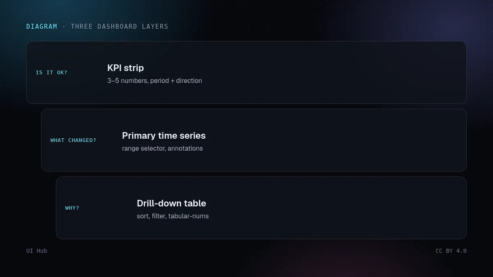
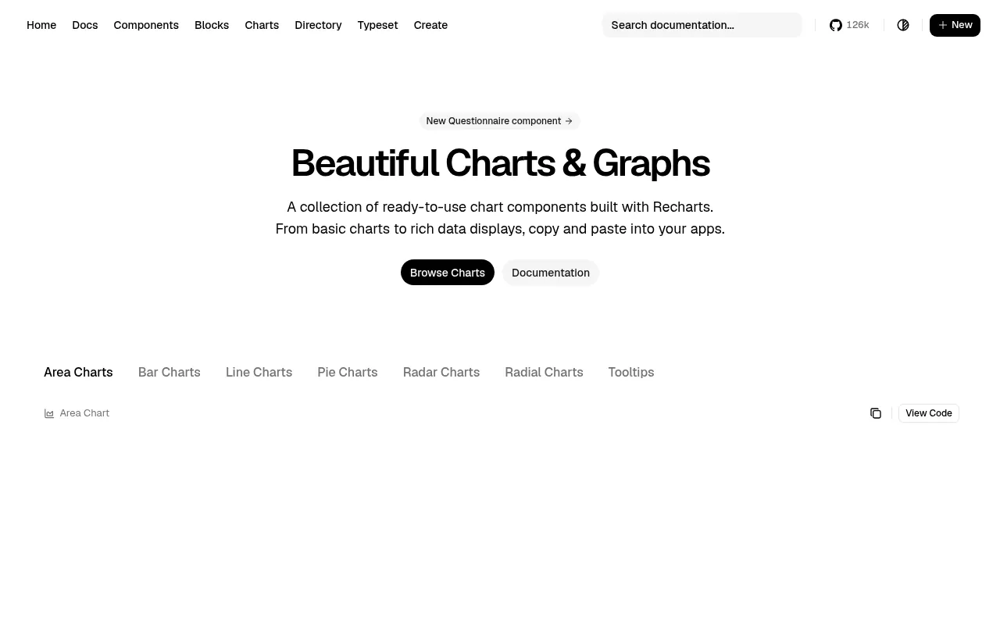
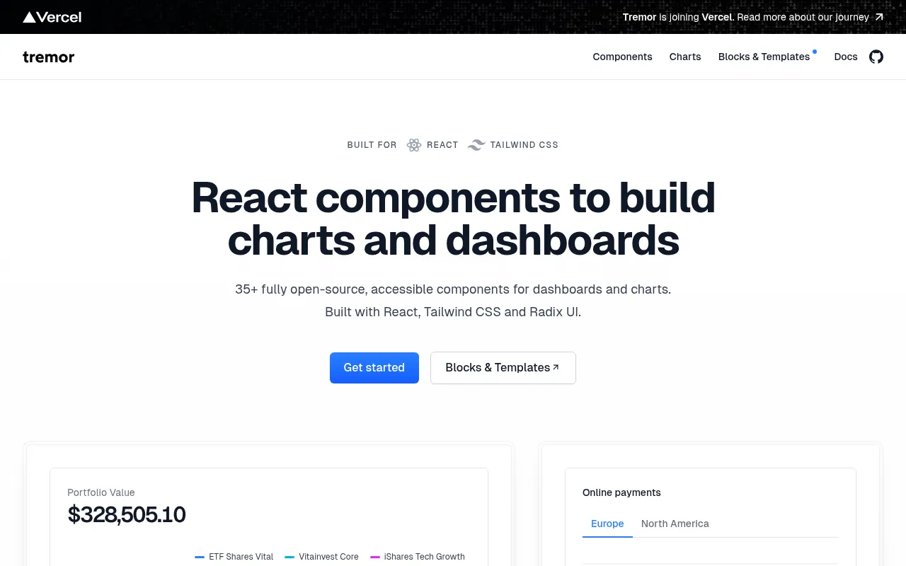

让生成器做一个「数据分析仪表盘」，大概率得到一个侧栏、四张数字卡和一堆同样大小的图表。看起来很完整，却什么也没回答。更好的结构是按用户真正会问的问题依次排布。

仪表盘三层：指标条、主图、下钻表格 · 示意图：UI Hub 原创，CC BY 4.0
三个层次
- 一切正常吗？3–5 个数字组成的指标条，每个带对比周期和涨跌方向，而不是一堆迷你折线图。
- 变了什么？一张主时序图配时间范围选择，在发生事情的地方加标注。
- 为什么？可排序、可筛选、能下钻的表格。表格才是用户真正干活的地方。

shadcn/ui 图表页（基于 Recharts） · 截图：shadcn/ui（ui.shadcn.com），2026-10-14 截取，版权归原站所有
生成器常漏掉的细节
- 等宽数字（
font-variant-numeric: tabular-nums），让数字对齐。
- 数字列右对齐，文字列左对齐。
- 每个组件都有空状态、加载骨架和错误状态。
- 标签里写单位和时区，再加一个「最后更新时间」。
- 颜色只表示状态，同时配非颜色提示（图标或文字），照顾色弱用户。

Tremor 仪表盘组件网站 · 截图：Tremor（tremor.so），2026-10-14 截取，版权归原站所有从哪些组件起步
shadcn 的仪表盘区块和图表（基于 Recharts）提供骨架；Tremor 提供专为仪表盘设计的 React 组件。在提示里写明这三个层次，你得到的就是能用的页面，而不只是好截图。